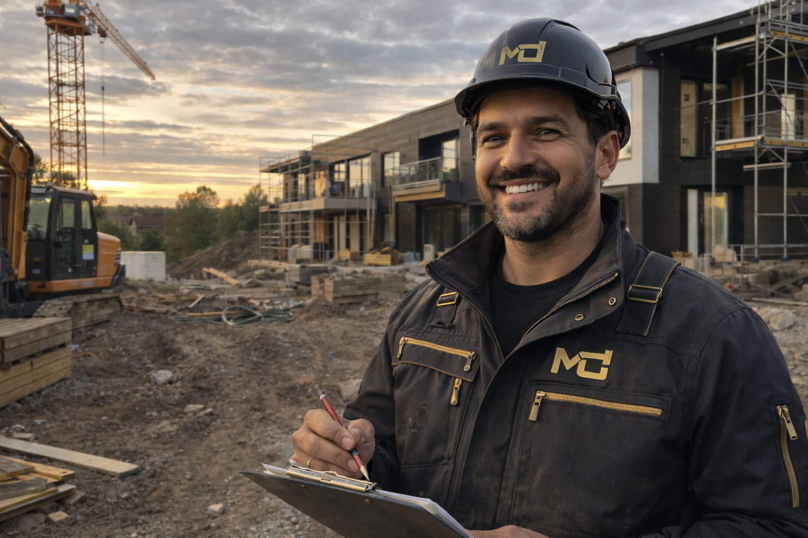

Tjänst-info
Renovering & Ombyggnation
Vid renovering och ombyggnation är planering och samordning avgörande. Vi tar ett helhetsgrepp där utförande, materialval och kommunikation hänger ihop så att projektet drivs framåt utan onödiga avbrott.
Vad vi gör
- Renovering av kök, badrum och invändiga ytskikt.
- Ombyggnation av planlösningar för bättre flöde och funktion.
- Teknisk uppgradering av installationer i samband med renovering.
- Samordning av underentreprenörer med tydlig ansvarsfördelning.
Vanliga moment
- Inventering, rivning och återuppbyggnad i rätt sekvens.
- Tätskikt och fuktsäkerhet i våtrum.
- Snickeri, målning och slutfinish enligt överenskommen nivå.
- Funktionskontroller före överlämning.
Struktur & kommunikation
Renoveringar påverkar ofta vardagen. Därför arbetar vi med tydliga veckoplaner, snabba avstämningar och transparens kring kostnadsdrivande val, så att projektet håller riktning från start till mål.
Passar för
Bostäder och lokaler där funktion, estetik och hållbara materialval behöver balanseras.
Arbetssätt
Vi prioriterar ordning, koordinering och tydliga beslutspunkter för att minska stillestånd och skapa ett jämnt arbetsflöde.